01 · 量法与口径：这是个什么模型，时间花在哪，怎么量才不自欺
这章解决什么：这个模型一步的时间为什么大头花在「搬权重」而不是「算」，并行形状为什么定成 FSDP 拉满、EP=1，步时、MFU、HBM 各拿哪个数才不自欺。这里定下的模型、并行形状和量法，后面每章沿用；feature 依赖图见 README。
直觉：参数很多、每个 token 只用其中一小部分，所以一步里「搬权重」比「算」重，后面几章的大刀几乎都在藏通信（§1、§4）。同一个数换分母、换统计窗口就差一截，所以先把口径定死（§3）。
ℹ️本章先用到的几个词（全书术语表见 README）
- 上游 XLA ＋ 书里的 flag，大约只到「关掉 HLO 通信重排」的 JIT 水平：同代码关 HLO 通信重排（CI 的 JIT 校验模式，真实数据）是指数 52、全开是 37，差约 1.4× [推断：按原始步时相除，两边数据和配置不完全相同，见 09 的「生产级别对齐」阶梯]。
- 剩下那截要自己重写 HLO 改写 pass（主力是 placement，上游没有替代），再配按同一配置抓的 cost profile，且 profile 里 SparseCore 通信的名字要对得上（编译日志里 cost profile 未命中计数明显下降），见 11 A01 / A03。
- placement 准入线是 96 − 4 ＝ 92 GiB，不是运行时可用上限 94.74 GiB [推断]；编译期 temp（临时缓冲总量）只当线索，判据是 placement 的接受 / 拒绝计数（02）。
- 512 FSDP 路数（EP=1，不分专家）
- 37 大号模型 256 芯片步时指数（单片 BF16 最初基线 = 100）
- 约一半 Routed MoE 占步时（§4 那份 BF16 profile 里约三分之二）
- 1153.5 MFU 分母（TFLOP/s/device）
💡全书的步时都是指数大号模型单片 BF16 最初基线 = 100，小号模型开发期起点 = 100，多模态版另有自己的底（README 登记）；指数越小越快，不同底的指数不能互比。百分比按原始步时算、指数逐个取整，拿两个指数相除可能和正文百分比差一档。指数直接相除就是倍数（100 → 37 ＝ 快约 2.7×），相减才是「省了多少个点」。硬件和平台常数（21 ms DCN 发起地板、94.74 GiB、92 GiB、1153.5）保留原值。
1.模型：两个尺寸，同一种骨架
问题：这是个什么模型，为什么搬比算重？
每层 = 注意力 + MoE。注意力按周期交错 KDA（线性注意力，状态与序列长度无关）和 MLA（DeepSeek 式低秩 KV softmax 注意力）。
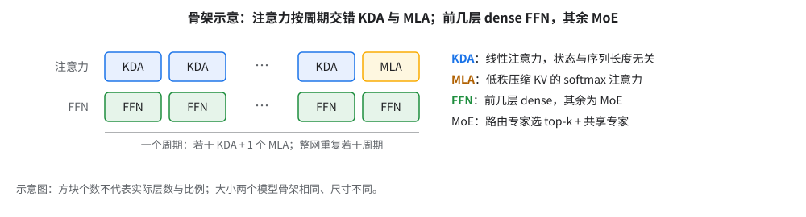
| 两个模型共有 | |
|---|---|
| 注意力 | KDA 与 MLA 按固定周期交错；KDA chunk 64、short-conv 宽 4 |
| FFN | 前几层 dense FFN，其余 MoE |
| MoE | 路由专家 ＋ 共享专家 |
| 序列 | 8192 |
书架对照：FSDP 在这里为什么不算免费（Scaling Book「全分片数据并行」节）
- 搬的时间明显多于算 [推断]，所以 02（藏通信）和 04（QAG）排最前。
- Scaling Book 的判据：每芯片每步 token 数超过 C / W_ici（C ＝ 每芯片峰值 FLOP/s，W_ici ＝ ICI 带宽，单位字节/s），FSDP 通信就能盖住，前提是稠密；MoE 搬全部参数、只算激活那部分，门槛要再乘上「总参 ÷ 激活参」这个大倍数。
- W_ici 的口径先对齐：Scaling Book 里 W 是双向带宽，v5p 的 4.6×10¹⁴ ÷ 1.8×10¹¹ ≈ 2550 用的是 W ＝ 2 × 9×10¹⁰，即沿一根轴做 1D 数据并行的双向带宽；三根轴都做 FSDP 时 W 乘 3，门槛除以 3（原书：约 850）。
- v7x 的数：取 W ＝ 200 GB/s（每轴双向）、C ＝ 2,307 TFLOP/s（BF16，每芯片），单轴门槛约 2,307 ÷ 0.2 ≈ 11,500 token/芯片，三轴都做 FSDP 约 3,850。
- 200 从哪来：Cloud TPU7x 文档写「bi-directional bandwidth of 200 GBps per axis」；Scaling Book 给 TPU7x 的每轴双向带宽是 1.8e11 B/s，与之吻合（「每轴双向」已含两个邻居）。
- 别直接代每芯片总量：本书唯一的 v7x ICI 数是 03 表里的「每芯片 1,200 GB/s 双向」（同一份文档），它是每芯片总量，不能代进上式；3 轴 × 200 ＝ 600，和 1,200 差 2 倍，官方的每芯片口径没说明怎么数 [推断，未核]。
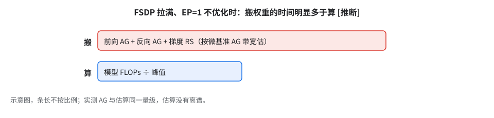
- 搬＝前向 AG + 反向 AG + 梯度 RS 三次全量，按片内 AG 带宽粗估；算＝每步模型 FLOPs ÷ 1153.5。实测见 04。
读图（示意）：比两行的红；剩下那截要靠 04 少搬。
2.并行方式：为什么是「FSDP 拉满、EP=1」
问题：专家这么多，为什么不分专家（EP），而是让每个 device 都临时拼出整份专家权重？
| 规模 | 拓扑 | device | mesh | PDB / GA / GBS |
|---|---|---|---|---|
| 小号模型 64 芯片 | 4x4x4（1 cube） | 128 | FSDP=128，EP=TP=CP=DP=1，shard_exp_on_fsdp |
2 / 1 / 256 |
| 大号模型 256 芯片 | 4x8x8（4 cube） | 512 | FSDP=512，EP=TP=CP=1 | 2 / 1 / 1024 |
| 大号模型多片 | 片数 × 4x8x8（如 10+ 片） | 片数 × 512 | DCN DP=N × ICI FSDP=512 | 2 / 1 / 1,024 × 片数 |
EP（expert parallelism）＝把不同专家放到不同 device 上，token 要用 all-to-all 送到专家所在的 device 再送回来；FSDP 则是专家权重切片分给所有 device，用时 all-gather 拼回整份、token 不动。为什么不用 EP：
| 实验 | 结果 |
|---|---|
| 小号模型 64 芯片策略扫描 | FSDP64·EP2 是 64 芯片策略扫描里最好的；EP2→EP4 慢约 25%，EP2→TP2 慢 8%，TP2→TP4 慢约 55%，关 SparseCore 慢约 60% |
| 由此定的原则 | EP/TP 尽量小、FSDP 控制在 cube 内，靠扩 DP 做 scaling |
| 默认改成 EP=1 / FSDP=128 | 小号模型指数 22 → 20（快 8%）：EP=2 一直在为 dispatch / combine 的 all-to-all 付钱 |
| fused MoE 前向走 EP2 vs 原生 EP1 | EP2 那条慢约 75% |
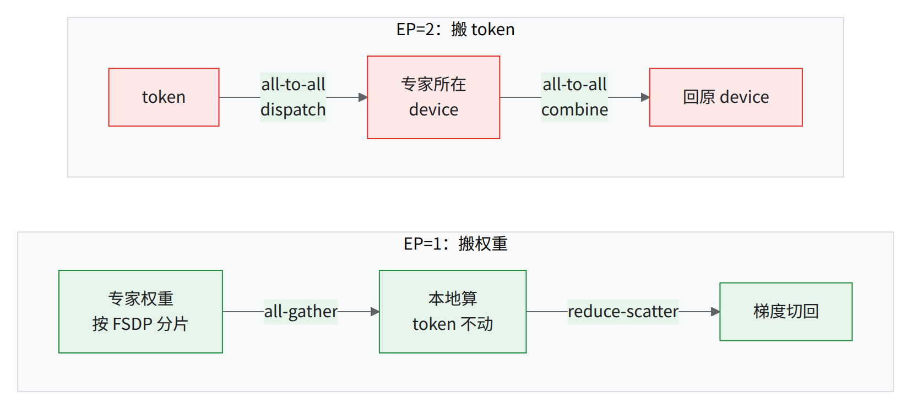
v7x ICI 上 AG 实测带宽约是 A2A 的 3 倍（4x4x4 微基准），所以宁可每层搬权重，代价是每层一次大块 AG/RS（02）。
为什么：AG 能让三根轴同时跑满，A2A 的流量却全部挤过最窄的那一刀。 AG 只和邻居传，速率约为 3 根轴的带宽之和，与片多大无关。A2A 要把一半数据送到立方体另一半，流量全得穿过「垂直于最长轴那一刀」，速率受这一刀的二分带宽限制（二分带宽 ＝ 把机器切成两半，两半之间所有链路加起来的带宽）。
3 从哪来（V ＝ 数组字节，N ＝ device 数，W ＝ 每轴带宽；有效带宽 ＝ 每 device 收或送的字节 ÷ 用时）：
- AG：每 device 收齐约 V，三轴一起传，有效带宽 3W。
- A2A：每 device 送 V ÷ N，用时 (V ÷ N) × 最长轴 ÷ 4W，有效带宽 4W ÷ 最长轴。
- 相除得 3 × 最长轴 ÷ 4，4x4x4 上为 3，与实测吻合。
微基准的带宽数是不是按这个口径算的，未核。
把握：公开资料 · 出处：Scaling Book 分片一章（sharding）：AllGather 跨多轴时带宽乘轴数；AllToAll 成本式 T ＝ (V/N)·max(A,B,C)/(4·W) 及其二分带宽旁注。每轴带宽见 Cloud TPU7x 文档
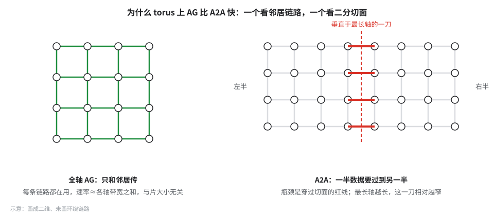
- 推论：片的最长轴越长，A2A 越吃亏。大号模型的 4x8x8 上，A2A 预计更慢 [推断：3 × 8 ÷ 4 ＝ 6 倍，本书没在 4x8x8 上测过 A2A]。
- 反例：EP 组整个落在芯片内两个 device 之间（EP=2 正好对上 core 轴，见下文拓扑坑）时，A2A 不过 torus，这条账不适用。GPU 胖树全二分带宽，没有「最长轴」惩罚，要重算。
- 改 EP=1 快的 8% 不能全记在「躲开 A2A」头上：它同时关掉了物理轴切分（见下文），两项没拆开测；EP=2 的脚本还默认开着 ring-of-experts（沿 EP 轴 AG + RS 搬 token、不走 A2A），实际走哪条路未核。
自己换模型时怎么算两边的账（符号式，没代入本书的数）：每 device、每个 MoE 层，S_w ＝ 这层全部专家权重的字节数，T ＝ 每 device 每步 token 数，k ＝ top-k，D ＝ hidden，b ＝ 每元素字节数。
- FSDP（EP=1）：前向 AG + 反向 AG + 梯度 RS，约 3·S_w·(N−1)/N 字节（N ＝ FSDP 路数），和 token 数无关。
- EP：前向 dispatch + combine、反向再各一次，约 4·T·k·D·b·(EP−1)/EP 字节，最忙的那个 device 决定这一步多久。
- 两边各除以自己实测的带宽（AG 和 A2A 分开测）再比。
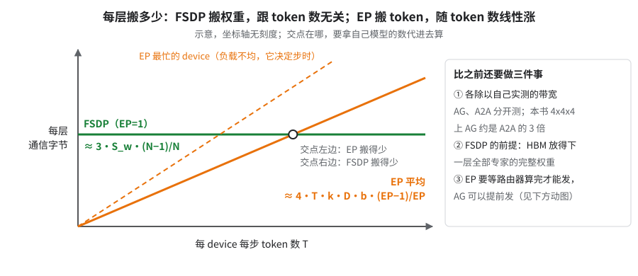
读图（示意）：EP 只在交点左边搬得少，还要先过右栏三道关。
读图（示意）[推断]：比两行的红色干等。
- 显存前提 [推断]：EP=1 要每个 device 临时放下一层（预取时一到两层）全部专家权重；放不下只能 EP>1，04 的 QAG 前提随之不成立（06）。
- 「FSDP 控制在 cube 内」和大号模型 FSDP=512 谁优先 [推断]：
- 那条原则定在只有 1 个 cube 的 64 芯片上，实际区分的是「片内 ICI」和「跨 DCN」；优先守「FSDP 不跨 DCN」，片间只做 DP。
- 片内跨 cube 的 FSDP 可以，前提是放得下（上一条）且 AG 藏得住（§4）；片内跨 cube 链路明显更慢时（如切了物理轴，见下文）才重新变硬约束。本书没在 4x8x8 上比过「FSDP=128 × DP=4」和 FSDP=512。
- 同策略换节点池拓扑差 一半以上（物理轴尽量不切分、高流量逻辑轴亲和 core 轴）。
- 2D FSDP（
fsdp_transpose）64 → 1024 芯片扩展效率约 97% vs 约 88%（纯 FSDP），但 64 芯片绝对值慢约 25%。
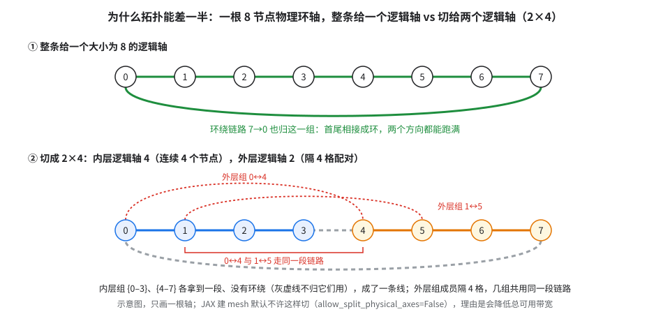
为什么拓扑能差一半：物理环整条给一个逻辑轴才是环；切给两个逻辑轴，内层成了线，外层挤同一段链路（见上图）。
- 环首尾相接，两个方向都能跑满；切开后内层组没有环绕，外层组几组共用同一段链路。JAX 建 mesh 默认就不许这样切，理由是「会降低总可用带宽」。
- 芯片内两个 device 之间（core 轴）走片内互连，比一根 ICI 链路快 6 倍，JAX ≥ 0.11.1 建 mesh 时把它排最高优先级，所以流量最大、大小为 2 的逻辑轴放这里。
GPU 上相当于：把 TP 放在 NVLink 域内，流量最大的那根轴放在最快的互连上（类比）。
把握：源码证实 · 出处：证实的是两条约束本身，「差一半以上」里两条各占多少没有 profile 拆分。JAX
jax/_src/mesh_utils.py的_create_device_mesh_for_nd_torus注释（allow_split_physical_axes默认 False；「the core axis is highest bandwidth」）；Cloud TPU7x 文档（die-to-die 接口「six times faster than a 1D ICI link」）
为什么 2D FSDP 效率高、绝对值低：绝对值慢在多出来的拷贝；效率高有一部分是分母效应。
- 权重另一维也切开后，matmul 前后多做 reshape / transpose 拷贝（layout copy）；这已到框架层能优化的边界，要编译器支持按需拷贝。
- 基线越慢，同样的通信增量算出来的效率越高（见下图）。
把握：推断 · 出处：绝对值低归因到 layout copy 未核；效率的拆分是推断，数据见 02 §4
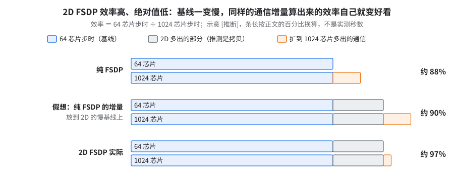
读图（示意）[推断]：到中间那行的约 90% 可由分母解释，再到约 97% 才是 2D 通信真的长得慢。
3.怎么量：五条口径
问题：步时、算力利用率、显存，各拿哪个数、除以什么？
| 量 | 怎么算 | 坑 |
|---|---|---|
| step time | 日志 seconds 稳态窗口（小号 step 10–49 p50，大号 step 3–49 mean） |
异步 dispatch 使日志错开 2 步（见下方动图）；读数折算后超过硬件峰值，说明计时口径错了，不是真快 |
| TFLOP/s/device | calculate_tflops_training_per_device ÷ step time |
公式要按模型核：上一代模型用错公式时虚高 4–6×；KDA 不计块内 [C,C] 求逆，占比被低估 [推断] |
| MFU | TFLOP/s ÷ 1153.5 | 另有用 1028.75 的口径，高约 12%（见下） |
| FP8 的 TFLOP/s | BF16 等价 FLOPs；不出 MFU | TFLOP/s × 步时 ＝ 每步 FLOPs，与 BF16 run 相同 → 可直接比 |
| HBM | XLA 编译估计 / 运行时分配 / XProf 峰值 / max_utils「logical」 |
报过超出 94.74 GiB 上限的数，是 logical |
| roofline / cost model 估时 | 按模块估 FLOPs、HBM 读写、通信量，除以峰值，扫并行配置 | 只当理想下界：KDA 用论文 FLOPs、HBM 按峰值、反向按前向 2× 估，都偏乐观；v7 DMA 带宽随块大小差两个数量级（4 KiB 约 13 GB/s，16 MiB 约 2,960 GB/s），小块按峰值算严重低估 |
读图（示意）：慢的是步 3，日志第 5 行才变大；单步会读成 ≈0 或 2 倍。
💡同一个数，换个分母就变小号模型 64 芯片同一个 run，按 1028.75 算出的 MFU 比按 CI 分母 1153.5 算的高约 12% [推断：1153.5 ÷ 1028.75 ≈ 1.12]，两个数并排出现时很容易被当成两次不同的实验。
- 1153.5 怎么来：每芯片 BF16 峰值 2,307 ÷ 每芯片 2 个 device（见下图）；CI 峰值表同此。
- 1028.75：查不到推导和官方口径，不要沿用。
- 上游 MaxText 不替你算 MFU：只打印每 device 的 TFLOP/s，上游 main 没有 v7x 峰值表，分母要自己定、自己写明。
⚠️MFU 只在同一个模型里横着比
- 分子是框架自报 FLOPs，自定义算子（如 KDA 块内求逆）有的没计入、各模型漏得不同，不适合跨模型比。
- 外部给的 TFLOP/s 先问清每芯片还是每 device（见下图）。
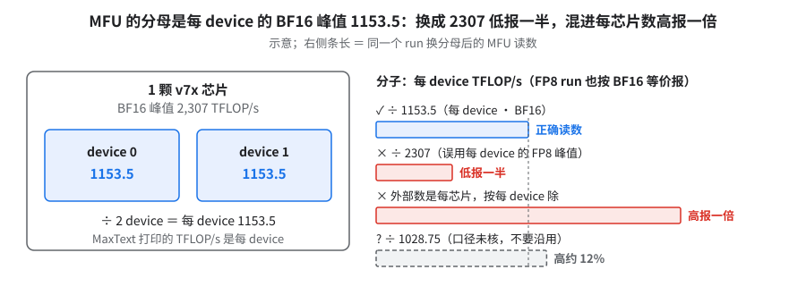
读图：右边只有第一条对。
profile 两条纪律：
- 以 enclosing
jit_train_step为真值；XProf 里两个 device 各占一个进程（PID 3、4），分别统计取均值；leaf-HLO 覆盖不到的部分不超过千分之一。 - TensorCore（下称 TC）上的暴露等待（
async-done）≠ SparseCore（下称 SC）上的通信执行时间（collective 区间），两者之差也不是「藏住了多少」（见图）。
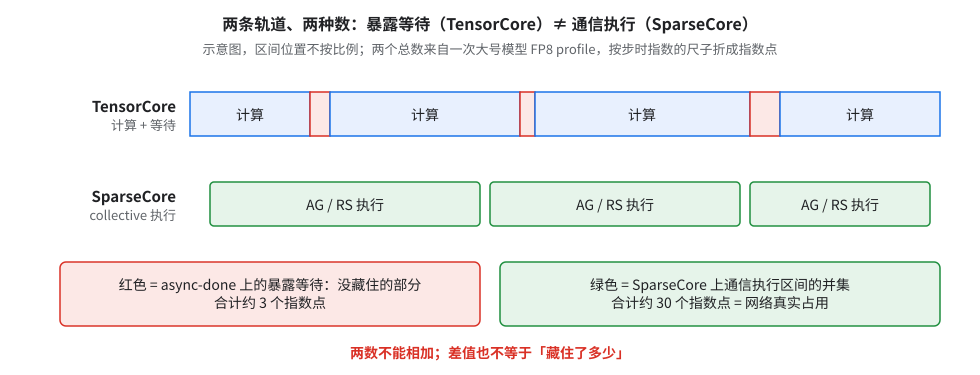
⚠️按 source 归因会张冠李戴按编译后
tf_opscope 归因，缺的按 HLO 数据流找回。Pallas 外层 scope 会丢、source_stack被 Qwix 污染，会把 MoE GMM 整块（约 15 个指数点）算到 Shared Expert 头上。
3.1 同一把尺子横着比：多片作业的稳态指数
问题：多片作业的步时怎么取，才能和单片 nightly 放在一张表里？
原始日志重算，step ≥ 3，剔除 profiler 假象步。大号模型指数（单片 BF16 最初基线 = 100）。
| 模型 / 配置 | 形状 | 精度 | 指数 p50 | 指数均值 |
|---|---|---|---|---|
| 大号模型 10+ 片 JIT 基线（HLO 通信重排关），三次独立运行 | 10+ × 4x8x8 | qwix fp8_full | 71 | 87 / 81 / 75 |
| 大号模型 10+ 片 JIT 基线，关 host reduction | 同上 | qwix fp8_full | 比上一行慢 1.9× | — |
| 大号模型 10+ 片生产配方（AOT，带 MTC） | 10+ × 4x8x8 | FP8 | 41 | 42 |
| 大号模型 20+ 片 | 20+ × 4x8x8 | FP8 | 41 | 42 |
| 大号模型 4 片 | 4×4x8x8 | FP8 | 39 | 43 |
| 大号模型 nightly（CI） | 4x8x8 | FP8 | 36 | — |
| 多模态版 三个配置 | 10+ × 4x8x8 | — | 冷启动区，约为自己稳态的 3 倍 | — |
- AOT 那三行多片按逐次运行的 p50：10+ 片取最长一段稳态（第一段稍短的那段也是 41），20+ 片和 4 片各取首段（都是约 740 步）。
- nightly 那行的口径：CI 每日跑的第 900–999 步步时。跑满 1000 步的同类 nightly 指数同样约 36。
- 多模态版那行不能当稳态（多模态底，只给比值）：每个配置只有几十步、镜像各不相同，全在冷启动区。
- 稳态 10+ 片比 1 片约慢 6%（多模态底，中位数，FP8），见 12。
- 1 片稳态取自含数值修复的 nightly（前段约 90 步中位数）；12 章「多模态底 100 → 53（约 1.9×）」的阶梯是另一版配置，两者不是同一组数。
- 1 → 4 → 10+ → 20+ 片：指数 36 → 39 → 41 → 41，10+ → 20+ 片几乎不掉，掉在 1 → 10+ 片 [推断：1 片是 CI 作业，代码和配置不同]（08）。
- 这个模型的 MFU 比同集群常见的 MoE 负载明显更低，差在模型/实现，不在集群（不走大 DCN 的 192 芯片测试同样偏低）。[推断] 原因可能有两条：KDA 的 FLOPs 被少算；SC 通信的并集占 step 约 80%（§4）。跨模型比 MFU 只当定性信号（§3 WARN）。
- 自报 seconds 错开 2 步（§3）在 10+ 片作业上逐行核过，四组配置都成立；稳态加总墙钟 ÷ 自报偏差不到 1%。
3.2 换成 GQA 模型：先手算一层 FLOPs，再信 MFU
本书模型没有 GQA 层，下面是通用公式，未用本书模型验证。符号：T ＝ 每 device 每步 token 数（PDB × seq），S ＝ seq，D ＝ hidden，Hq ／ Hkv ＝ query ／ KV 头数，d ＝ 每头维度，E ＝ 路由专家数，k ＝ top-k，F ＝ 专家 FFN 宽。一次乘加记 2 FLOPs。
| 一层里的项 | 前向 FLOPs |
|---|---|
| Q 投影 | 2·T·D·Hq·d |
| K、V 投影 | 2·T·D·2·Hkv·d（GQA 只省这一项） |
| QKᵀ 和 AV | 不带 mask 4·T·S·Hq·d；causal 按一半算，即 2·T·S·Hq·d |
| 输出投影 | 2·T·Hq·d·D |
| 路由器 | 2·T·D·E |
| 路由专家（SwiGLU 三个矩阵） | k × 6·T·D·F |
| 共享专家 | 每个共享专家 6·T·D·（它的 FFN 宽） |
- 训练一步 ＝ 前向 × 3（反向按前向两倍算）。
- 注意力核心按 Hq 算，不按 Hkv 算：KV 头少了，QKᵀ 和 AV 的乘法次数不变。
- 上游 MaxText 怎么处理 causal（
src/maxtext/utils/maxtext_utils.py的calculate_tflops_training_per_device，按上游 main 核过）：- 非 MLA 分支先按不带 mask 算 4·B·S²·Hq·d，再除以 2，注释写的依据是 Megatron-LM 和 NeMo 的同一做法。
- Q／K／V、输出投影的写法和上表相同，K、V 用 Hkv。
- MLA、滑动窗口、chunked 注意力各有分支：判 MLA 看
attention_type == "mla"；滑动窗口按decoder_block走（GEMMA2/3、GPT_OSS 本身是 GQA 模型），所以 GQA 模型也可能走进去，要核。share_kv_projections打开时 K、V 投影只算 1 份。
- 上游公式的两个盲区，自己核：
- 共享专家只对白名单算：自定义的 GQA + 共享专家模型不在白名单里，分子会少一截。
- 白名单：模型是 MoE（专家数 > 1）且
decoder_block在 DEEPSEEK / LLAMA4 / QWEN3_NEXT / QWEN3_5 / GEMMA4 / DEEPSEEK4 里，才走「路由器 + 共享 ×shared_experts+ 路由 × top-k」并计入前几层 dense FFN。 - 其余：QWEN3_CUSTOM_MOE 有单独分支；别的类型只算「路由器 + 路由专家 × top-k」。
- 白名单：模型是 MoE（专家数 > 1）且
- 共享专家宽度取
moe_mlp_dim（GEMMA4 例外取mlp_dim）；dense 层数按类型取：DEEPSEEK 看first_num_dense_layers，LLAMA4 看interleave_moe_layer_step，其余白名单类型按全部是 MoE 层算。MTP 层的 FFN 另有一份白名单，里面没有 QWEN3_5。 - 自研 decoder 想被计入：
decoder_block同时决定实例化哪套层类（layers/nnx_decoders.py），借用现有名字会换掉你的层，不可行。只剩两条路：在上游这两处白名单里加你的类型（自己维护的补丁），或者不改公式、在日志里自己补上共享专家这一项。 - 验证：差值为 0 ＝ 没进白名单分支。
- 怎么调：这个函数只要 config 就能离线调。同一份 config 只改
shared_experts（0 和 N）各调一次。 - 期望差值：3 × 2·B·S·D·F_s·(len(
mlp_activations)+1) × MoE 层数 ／1e12。B 取per_device_batch_size，F_s ＝ N × 共享宽度，3 ＝ 训练前向加反向；这是该文件里 FFN 辅助函数的写法。 - 调前设置：
gradient_accumulation_steps=1、关 MTP。打印值整体乘了梯度累积步数；MTP 层在 MTP 白名单里时也会多加一份共享专家。
- 怎么调：这个函数只要 config 就能离线调。同一份 config 只改
- 除以 2 是对整段 causal 的近似。打包多文档（segment mask）或 kernel 跳过整块被遮的部分时，硬件实际做的乘法和这个数不一样。
- 共享专家只对白名单算：自定义的 GQA + 共享专家模型不在白名单里，分子会少一截。
- 怎么判断对了：MaxText 启动时打印
Per train step: Total TFLOPs（每 device，已乘gradient_accumulation_steps）。用上表加 embedding（上游只算 unembedding，2·T·D·词表）和 MTP 层手算一遍，总数和「权重 ／ 注意力」两项占比都应对上（只差舍入）。对不上先查走了哪个分支、漏了哪项；修好之前只报 tokens/s/device。
3.3 换成 MLA 模型：上游怎么算，哪里会算错
下面是照上游源码抄的符号式，没拿本书模型（有 MLA 层）的数代入验证。出处：上游 src/maxtext/utils/maxtext_utils.py 的 calculate_mla_tflops_per_device（按上游 main 核过），由 attention_type == "mla" 触发。
符号：T ＝ 每 device 每步 token 数（per_device_batch_size × S），S ＝ seq，D ＝ emb_dim，H ＝ num_query_heads，d_n ／ d_r ／ d_v ＝ qk_nope_head_dim ／ qk_rope_head_dim ／ v_head_dim，r_q ／ r_kv ＝ q_lora_rank ／ kv_lora_rank。
| 一层里的项 | 上游的前向 FLOPs |
|---|---|
Q（q_lora_rank = 0） |
2·T·D·H·(d_n＋d_r) |
| Q（有低秩） | 2·T·(D·r_q ＋ r_q·H·(d_n＋d_r)) |
| KV 下投影＋上投影 | 2·T·(D·(r_kv＋d_r) ＋ r_kv·H·(d_n＋d_v)) |
| QKᵀ 和 AV | 2·T·S·H·(d_n＋d_r＋d_v)，再除以 2（causal） |
| 输出投影 | 2·T·D·H·d_v |
- 开了稀疏 indexer（
use_indexer且 S ＞indexer_topk）时不除以 2，改乘 indexer 实际覆盖的那块面积占比，并加上 indexer 自己的投影和打分 FLOPs。 - 核心项按「展开后」的每头维度算：QK 用 d_n＋d_r、AV 用 d_v，相当于假设 KV 先上投影成每头的 K、V 再做注意力。如果你的 kernel 用吸收（absorb）写法、直接在 r_kv 维的潜空间里算，硬件实际做的乘法和这个数不同 [推断]，要按你的 kernel 手算。
- 混合注意力模型的大坑：KDA ／ 线性注意力与 MLA 交错的模型，必须自己补公式。
- 上游只有 QWEN3_NEXT ／ QWEN3_5 两类按
inhomogeneous_layer_cycle_interval把层分成「全注意力层」和「线性注意力层」分别计（DEEPSEEK4 也分层，但按压缩比分，不是线性 / 全注意力）。 - DEEPSEEK 等其它分支把 MLA 的投影和核心项乘以全部 decoder 层数：每一层都按 MLA 算、线性注意力一项不算，分子方向不定（MLA 核心项多算、KDA 少算）。
- 上游只有 QWEN3_NEXT ／ QWEN3_5 两类按
- 验证法同 §3.2：只改
attention_type（mla ↔ 非 mla）或只改一个 MLA 维度，离线各调一次，差值对上手算再信打印值。
4.时间花在哪：大号模型 256 芯片分模块
问题：每一刀之后，剩下的时间在谁身上？
下表每格是该模块在一步里占的指数点（列头是该列的整步指数；逐项四舍五入，加总可能差 1）。第一列是未开 HLO 通信重排、已做过一轮优化的 BF16 分模块 profile，所以是 75 不是起点 100。
| 模块（指数点） | BF16 无 HLO 通信重排 75 | BF16 AOT+HLO 通信重排 55 | FP8 44 | FP8 41 | FP8 最好 37 |
|---|---|---|---|---|---|
| Routed MoE | 49（约三分之二） | 28 | 21 | 21 | 19（约一半） |
| KDA Attention | 18（约四分之一） | 19 | 16 | 14 | 13（约三分之一） |
| MLA Attention | 2 | 2 | 2 | 2 | 2 |
| Shared Expert | — | 1 | 1 | 1 | 1 |
| 其余（optimizer/loss/norm/未归因…） | 6 | 5 | 4 | 3 | 3 |
- MoE 砍掉的几乎全是通信（75 那列里 RS 暴露 17 点 + AG 暴露 14 点）；KDA 成第二大纯计算热点（05）；MoE、KDA 之外（MLA＋Shared＋其余）到最好那列合计只剩约 6 点。
- 开 AOT + HLO 通信重排后：RS 暴露 17 → 5 点、AG 14 → 6 点，两项共省约 19 点 [推断：按原始秒数两项差值相加再折指数；逐项取整再相加会显示 20]。
- 单片 JIT 同口径（独立复现里的 JIT 对照；大号模型 FP8、1 片、HLO 通信重排关，指数 51；和「照搬能复现到哪」里 CI 的 52 数据不同，代码也没叠生产补丁，见 09）：
- TC 真在算约 60%，没藏住的通信约 40%：等 RS 约 30%（大头是 MoE 专家梯度 RS，约 20%）、等 AG 7%、其它 4%（都是占这一步的比例）。
- 开 HLO 通信重排在 1 片上约省三成步时（09 的「生产级别对齐」阶梯），主要来自改调度，上限就是这块暴露 [推断]。
- 最好那列的 MoE 细账（指数点）：GMM 约 5、TGMM 约 4、路由/重排约 3、FP8 准备约 2、gather offload 暴露约 2。
- 换成全 MLA（或 MLA 层占比高）的模型：本表 MLA 只占约 5%，是因为大部分注意力层是 KDA。全 MLA 时 attention 占比会远高于此 [推断：书里没有全 MLA 的实测]，11 A12 的 Splash 块参数重扫、05 的 MLA Splash 残差放置开关要从「最后做的小头」前移到 FP8 ＋ QAG 之后就做。
两条底线（取自指数 44 那份 FP8 分模块 profile；它不是满配（指数 37），见 04）
执行并集＝两颗 SparseCore 上所有通信区间合起来的时长，盖没盖住都算；暴露＝TensorCore 干等通信的时长，只有它拖慢步时（§3 那张图）。
- 按指数 44 那份 profile 估的 step 下界约指数 35：SparseCore 通信执行并集约 35 点（占那一步约 80%），暴露只约 7 点。这个「下界」只在通信不再变短时成立 [推断]：到指数 37 时并集降到约 30 点（仍占约 80%），单片最快到 34，已低于它（03；34 叠了 RS 双 SparseCore、新 profile、双 SC 通信搜索三样，不是单刀，也不是生产默认）。
- 从 37 到目标 36 还差 2–3%：缩通信本体（按指数 44 那份 profile，RS 执行本体最大，约 17 点；不是 §4 表下 75 那列的「RS 暴露 17 点」），或缩计算但不多暴露通信。
5.口径债与还没解决的
- 口径债：KDA FLOPs 少算；FP8 无 MFU；HBM 四种数混用。
- 多模态版冷启动慢约 3 倍已诊断（12）：冷启动区每步现拉远端数据；同一份代码跑够长之后 10+ 片回到稳态（只比 1 片慢约 6%），计算代码零改动。
- 坑：短跑数不能判瓶颈。「比 1 片慢三倍」容易被当成计算问题；冷启动与限流各占多少分不开（旧镜像版本无稳态数据）。
- 目标指数 36（另有 goodput ≥95%）：256 芯片口径，不是多片。本书的尺子（满配，单片）是 37；CI nightly（单 SC）在 step 900–999 窗口约 36，已贴近目标。
考考自己
一份报告拿 FP8 run 的 TFLOP/s/device 除以 FP8 峰值 2307 报 MFU。哪里不对？ 答：FP8 run 报的 TFLOP/s 是 BF16 等价，分母得用 1153.5，除以 2307 会低报一半；且 FP8 workflow 本就不出 MFU。